Esta página foi traduzida automaticamente. Se algo não estiver bem, diga-me.
Dicas de tecnologia gratuitas para Bridlington e o East Riding
Ajuda simples com telemóveis, computadores e como ficar seguro online. Gratuito, sem nada para se inscrever.
Últimas dicas

Check Your Mobile Data
Your phone plan gives you a set amount of mobile data each month. Here's how to check how much you've used, so you don't go over and get charged extra.

Bright Sky: free, private help with domestic abuse
Today is the UN’s International Day for the Elimination of Violence against Women. I wanted to share a free app that could quietly help someone.

Share Your Location with Family
Out walking or driving on your own? You can share your location with someone you trust, so they can check you're OK.
Tracker Alerts
Today marks the start of the 16 Days of Activism against gender-based violence, so I wanted to share a phone safety feature that could really help someone.

Delete Apps You Never Use
Got apps on your phone you never use? Deleting them frees up space, cuts down on alerts and makes your home screen easier to use.

Is your Google account safe? Run a free check
Here’s a free 5-minute check that makes your Google and Gmail account safer.
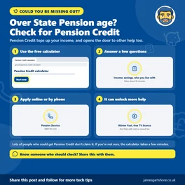
Over State Pension age? Check for Pension Credit
If you or someone you know has reached State Pension age, it’s worth checking for Pension Credit.

Unsubscribe from emails in one tap
Is your inbox full of marketing emails? Gmail can stop them in a few taps.

Download a map before you go
Going somewhere with poor signal? Google Maps can work with no signal at all, if you save the area first.

Update All Your Apps
App updates fix problems and close the gaps that scammers use. You can update all your apps with one tap.

Lost your Android phone? Find it from any computer
Lost your Android phone? You can find it from any computer or tablet, even a friend’s.

Free Up Phone Space
Has your phone said its storage is full? Here's how to clear out what you don't need, without losing what you love.

Old cables and gadgets? Don’t bin them
It’s the European Week for Waste Reduction. Most of us have a drawer of old cables, chargers and phones, and they shouldn’t go in the bin.

Quiet Nights Do Not Disturb
Does your phone beep at night? Do Not Disturb keeps it quiet while you sleep, but you can still let family get through.
Marketplace Scams
With Black Friday and Christmas shopping coming up, I wanted to share some tips for buying and selling safely on Facebook Marketplace and similar sites.

Get more from your TV
It’s World Television Day, so here are a few ways to get more from your TV.
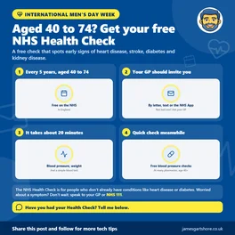
Tem entre 40 e 74 anos? Obtenha o seu Check-up de Saúde gratuito do NHS
Para o Dia Internacional do Homem esta semana, um lembrete sobre um exame gratuito para todos os que têm entre 40 e 74 anos em Inglaterra.
Anúncios e Lojas Falsas
Com a chegada da Black Friday e das compras de Natal, queria partilhar um aviso sobre anúncios falsos e lojas online.
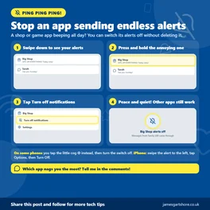
Pare as Alertas de Apps Incomodativas
Is a shop or game app beeping at you all day? Here is how to turn off its notifications on Android and iPhone. Free local help, Bridlington & Driffield.

Cuida de alguém? Ajuda gratuita para cuidadores
É o Dia dos Direitos dos Cuidadores. Se ajuda um familiar ou amigo que não conseguiria sem si, é um cuidador, mesmo que nunca se tenha chamado assim.

Legendas em direto
Hard of hearing? Here is how to turn on Live Caption on your Android phone so you can read what is being said in videos.

Encontre uma casa de banho pública perto de si, no seu telemóvel
Find a public toilet near you, on your phone, with a free website. Handy for days out. Free local help, Bridlington & Driffield.

Get extra help in a power or water cut, for free
Did you know there’s a free list that tells your energy and water companies you may need extra help? It’s called the Priority Services Register.

Phone Reads Text Aloud
Did you know your phone can read things out loud to you? Great for long messages, or when your eyes are tired.

Worried someone you know is being scammed?
It’s Safeguarding Adults Week. Scammers often target people who live alone, and they can be very convincing. Here’s how to help someone you’re worried...
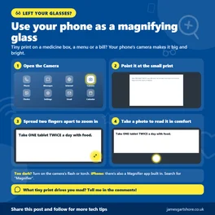
Lupa para Telemóvel
Deixou os seus óculos noutra divisão? A câmara do seu telemóvel funciona como uma excelente lupa para letras pequenas em caixas de medicamentos, menus e faturas.

Corte de energia? Ligue 105
Power cut? Call 105, free, 24 hours a day, in England, Scotland and Wales. Here is what to do and what to keep ready before winter.

Pare. Pense. Verifique. Depois, aja.
É a Semana Internacional de Sensibilização para a Fraude. Os burlões dependem de o apressar, por isso alguns segundos de reflexão são a sua melhor proteção.

Semana Anti-Bullying
É a Semana Anti-Bullying e o tema deste ano é "Quebre o Silêncio". Se um filho ou neto estiver a sofrer bullying online, saiba como pode ajudar.

Parar a Correção Automática
Does your phone keep changing the words you type? Here is how to turn off autocorrect in Settings, step by step, in plain English.

Unwell? Free NHS help, no GP wait
It’s Self Care Week. For everyday illnesses, these free NHS services can help without waiting for a GP appointment.

Limites de Rede de Aplicações
Choose which apps can use your mobile data when you are out and about. Steps for iPhone and Android. Free local help, Bridlington & Driffield.

Encontrar o Seu Próprio Número de Telemóvel
Forgotten your own mobile number? Here is how to find it in a few taps on an Android phone or an iPhone. Free local help, Bridlington & Driffield.

Deixe o seu telemóvel ajudá-lo a conduzir com segurança
É a Semana da Segurança Rodoviária, por isso saiba como deixar o seu telemóvel ajudá-lo a conduzir com segurança.

Guardar um Novo Contacto
Someone new rang you? Here is how to save their number as a contact on an Android phone or an iPhone. Free local help, Bridlington & Driffield.

As chamadas continuam a cair dentro de casa? Use chamadas via Wi-Fi
O sinal do seu telemóvel falha dentro de casa? As chamadas via Wi-Fi permitem que o seu telemóvel faça e receba chamadas através do Wi-Fi da sua casa.

Dia Mundial da Diabetes
É o Dia Mundial da Diabetes. Quer tenha diabetes ou queira reduzir o seu risco, estas ferramentas gratuitas podem ajudar.

Fazer Doações para Children in Need? Doe com segurança
O BBC Children in Need é hoje na BBC One a partir das 19h. Campanhas grandes como esta às vezes atraem links de doação falsos, por isso, saiba como doar com segurança.

Lanterna do Telemóvel
Switch on your phone's torch in seconds from the top of the screen, on both Android and iPhone. Free local help, Bridlington & Driffield.

Dia Mundial da Gentileza
Hoje é o Dia Mundial da Gentileza. Um pouco de gentileza com a tecnologia pode significar muito para alguém que esteja a passar por dificuldades ou que esteja sozinho.

Permissões de Localização
Some apps can see where you are all the time. Here is how to check and limit location access on iPhone and Android. Free local help, Bridlington & Driffield.

Mensagens de Texto sobre o Pagamento de Combustível de Inverno
Os Pagamentos de Combustível de Inverno começam a ser enviados a partir de meados de novembro, e as mensagens de texto de burlas sobre o assunto estão a circular novamente.

Fale em vez de escrever
Fiddly keyboard? Here is how to speak your messages instead and have your phone type them for you. Free local help, Bridlington & Driffield.

Recordar um familiar que serviu
Hoje é o Dia do Armistício. Se desejar saber mais sobre um familiar que morreu na Primeira ou Segunda Guerra Mundial, existe um site gratuito que pode ajudar.

Precisa de um Telemóvel Novo?
Alguma loja de telemóveis lhe disse que é tempo de mudar para o modelo mais recente? Antes de gastar centenas de libras, vale a pena saber que os funcionários da loja muitas vezes...

Lembrete de Medicamentos
Never forget your tablets. Here is how to set a daily reminder alarm in your phone's Clock app. Free local help, Bridlington & Driffield.
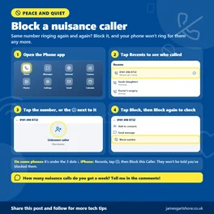
Bloquear uma Chamada Inoportuna
Is the same number ringing you again and again? Here is how to block it on Android and iPhone so your phone stops ringing for them.
Antivírus para Telemóvel
You do not need to install an antivirus app on an iPhone or Android phone, because protection is built in. Here is why.
Mensagens de Texto de Burla
Fake texts claim an unpaid parking fine, an HMRC refund or a fuel payment. Here is how to spot them and what to do. Free local help, Bridlington & Driffield.

Pontos Coloridos no iPhone
Já reparou num pequeno ponto colorido, ou numa bolha colorida atrás da hora, no topo do ecrã do seu iPhone? É o seu iPhone a dizer-lhe o que...

Sem Carregador na Caixa
Comprou um novo telemóvel ou portátil, ou está a pensar fazê-lo? Verifique a caixa, porque alguns já não vêm com carregador.

Enviar uma Foto no WhatsApp
Send a photo to family on WhatsApp in a few taps, whether it is the grandchildren or the garden. Step by step. Free local help, Bridlington & Driffield.
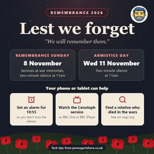
Para não esquecermos
O Domingo do Armistício é hoje, 8 de novembro, e o Dia do Armistício é na quarta-feira, 11 de novembro. Em ambos os dias, há dois minutos de silêncio às 11h.

Mover Ficheiros para um Novo Computador
Got a new laptop? Here is how to move your photos and documents from the old one using a USB memory stick or OneDrive.
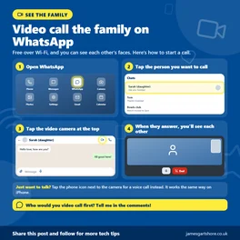
Chamada de Vídeo no WhatsApp
Video call family on WhatsApp in a few taps, on iPhone or Android. Step by step, in plain English. Free local help, Bridlington & Driffield.

Tirar um Screenshot
Take a picture of what is on your screen. Here is how to take a screenshot on Android and iPhone. Free local help, Bridlington & Driffield.
E-mails de Fraude
Queria partilhar um aviso sobre e-mails de burlas, pois há muitos a circular neste momento a fingir ser de organizações conhecidas.

Limpar um Portátil Antigo
Getting rid of an old laptop? Here is how to save what you need and wipe it clean first, using Windows 11 settings. Free local help, Bridlington & Driffield.
999 Acesso para Surdos
Eu queria partilhar alguns serviços gratuitos que permitem que pessoas surdas, com deficiência auditiva ou com dificuldades na fala contactem o 999 numa emergência. Muitas pessoas...

Digitalize um Documento com o seu Telemóvel
Scan a letter or form into a PDF with the Google Drive app on your phone, then email or share it. Step by step. Free local help, Bridlington & Driffield.
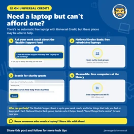
Ajuda com Computador Portátil no Universal Credit
Perguntam-me frequentemente se é possível obter um computador portátil gratuito através do Universal Credit. Não existe um computador automático que venha incluído, mas existem locais que podem ser capazes...

Abrir PDFs no seu Telemóvel
Letters, forms, tickets and bills often arrive as PDFs. Here is how to open and save them on an Android phone or an iPhone.
Verificação de Subscrições
Streaming, apps and free trials that turned into paid plans can quietly cost a few pounds a month. Here is how to check them.

Noite de Fogueiras
Amanhã é a Noite de Fogueiras! 🎆 Aqui estão algumas formas de o seu telemóvel o ajudar a aproveitá-la em segurança.

Verifique o seu Computador para Vírus
Worried your laptop has a virus? Here is how to run a full scan with Windows Security, plus the offline scan for anything hiding.
Burla no WhatsApp
Queria partilhar um aviso sobre duas burlas no WhatsApp que são muito comuns no momento.

Aplicações Gratuitas e Períodos de Teste Gratuitos
Muitas aplicações dizem que são "gratuitas", mas algumas ganham dinheiro de outras formas: anúncios, extras pagos ou períodos de teste gratuitos que se transformam silenciosamente em mensalidades ou semanais...
Chamadas de Fraude
Queria partilhar algumas formas de reduzir as chamadas de burlas e de incómodo, pois há um novo tipo que anda por aí e que vale a pena conhecer.

Encontrar Ficheiros e Pastas no Seu Telemóvel
Downloaded a form or a letter and cannot find it? Here is how to find your files and folders on an Android phone. Free local help, Bridlington & Driffield.
Contas Separadas
Queria partilhar uma dica simples que pode fazer uma grande diferença para manter o seu computador seguro: usar contas separadas para coisas diferentes.

Telemóvel Lento
Is your Android phone getting slower? Here are simple steps that help, and why to avoid cleaner and booster apps. Free local help, Bridlington & Driffield.
Burlas por Chamada Telefónica de Bancos
Eu queria partilhar um aviso sobre uma das burlas mais dispendiosas que circulam no momento: chamadas telefónicas de pessoas que fingem ser o seu banco ou a polícia.
Dia Mundial da Poupança
Ontem foi o Dia Mundial da Poupança, por isso queria partilhar algumas ferramentas gratuitas que podem tornar a poupança um pouco mais fácil, mesmo quando o dinheiro é curto.

Eliminar E-mails no seu Telemóvel
Inbox full of old messages and newsletters? Here is how to delete one email or lots at once on your phone, and what Archive means.
Halloween
Com o Halloween esta noite, queria partilhar algumas formas como a tecnologia pode ajudar, quer esteja à espera de doces ou prefira uma noite tranquila...
Semana da Literacia Mediática Dia 8
É o último dia da Semana Mundial de Literacia Mediática e de Informação, por isso queria terminar com alguns recursos gratuitos para ajudar os filhos e netos...
Semana de Literacia Mediática Dia 7
É o sétimo dia da Semana Mundial de Literacia Mediática e de Informação, e as dicas de hoje são sobre como distinguir anúncios e críticas falsas de conselhos genuínos.
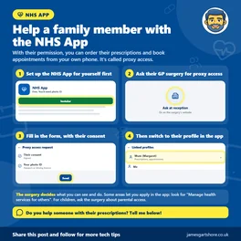
App do NHS para Cuidadores e Famílias
Ajuda um progenitor, parceiro ou familiar com a sua saúde? Com a permissão deles, pode encomendar as suas receitas e marcar as suas consultas...
Dia de Networking Online
Hoje é o Dia Mundial da Rede Online, que se dedica a criar e manter ligações online. Quer queira voltar a contactar antigos...

Jovens nas Redes Sociais
Se tem filhos ou netos nas redes sociais, aqui estão algumas formas simples e gratuitas de os ajudar a manter-se mais seguros. A maioria das aplicações de redes sociais é para idades...
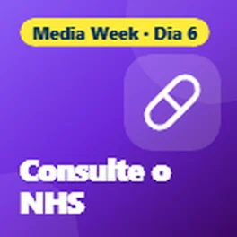
Semana de Literacia Mediática Dia 6
É o sexto dia da Semana Global de Literacia Mediática e Informacional e hoje eu queria falar sobre informações de saúde online.
Dia Mundial do AVC
Hoje é o Dia Mundial do AVC, por isso queria partilhar como identificar os sinais de um AVC e como o seu telemóvel pode ajudar numa emergência.
Aprendizagem Familiar
Com as férias escolares a chegar e o mês de outubro sendo o Festival de Aprendizagem em Família, eu queria partilhar algumas aplicações e sites gratuitos que pode aproveitar com a...
Semana da Literacia Mediática Dia 5
É o quinto dia da Semana Mundial de Literacia Mediática e Informacional, e as dicas de hoje são sobre mensagens encaminhadas no WhatsApp e mensagens em cadeia.

Cartão SIM Gratuito do National Databank
Sabia que existem dados móveis gratuitos para pessoas que não podem pagar? O National Databank, gerido pela organização Good Things Foundation, oferece...
Media Literacy Week Dia 4
É o quarto dia da Semana Global de Literacia Mediática e Informacional e hoje eu queria partilhar algumas ferramentas integradas do Facebook que lhe permitem ter mais controlo...

O que a NHS App pode fazer
Cansado de ligar para o médico às 8h da manhã? A aplicação gratuita do NHS coloca muitos dos seus serviços de saúde no seu telemóvel.

Adicionar um Cartão Bancário ao Google Wallet
Pay with your phone instead of your bank card. Here is how to add a card to Google Wallet, and why it is safer than using the card itself.
Media Literacy Week Dia 3
É o terceiro dia da Semana Global de Literacia Mediática e Informacional e a dica de hoje é sobre onde obtém as suas notícias.
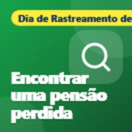
Dia de Rastreamento de Pensões
Hoje é o Dia Nacional de Rastreio de Pensões, por isso queria partilhar algumas ferramentas governamentais gratuitas que podem ajudá-lo a localizar quaisquer pensões que possa ter perdido...
Get Online Week Dia 7
É o último dia da Get Online Week, por isso queria terminar a partilhar onde pode obter ajuda gratuita com a tecnologia, porque não tem de aprender tudo sozinho...
Semana de Literacia Mediática Dia 2
É o segundo dia da Semana Mundial de Literacia Mediática e Informacional, e hoje eu queria partilhar algumas ferramentas gratuitas para verificar se uma foto é real ou criada por IA.

Segurança no Pagamento por Código QR
Um aviso rápido sobre códigos QR, aqueles códigos de barras quadrados que digitaliza com a câmara do seu telemóvel. Os burlões colam códigos falsos sobre os reais, especialmente em parques de estacionamento...

As Horas Recuam
Apenas um pequeno lembrete de que os relógios recuam uma hora esta noite, às 2h da manhã de domingo. Isso significa uma hora extra na cama, mas também alguns relógios para verificar.
Get Online Week Dia 6
É o sexto dia da Get Online Week, e as dicas de hoje são sobre manter-se próximo da família e dos amigos.
Dia 1 da Semana de Literacia Mediática
Hoje é o início da Semana Mundial de Literacia Mediática e Informacional, que tem como objetivo saber distinguir o que é real do que não é online. Com tantos...
Get Online Week Dia 5
É o quinto dia da Get Online Week, e hoje queria partilhar ajuda para quem não tem um dispositivo ou internet em casa.

Armazenamento do Google Cheio
Told your Google storage is full? Here is how to see what is using the space and clear big emails so new emails can arrive.
Use o Rosa
Hoje é o dia Wear It Pink para a Breast Cancer Now, por isso queria partilhar algumas formas gratuitas como o seu telemóvel o pode ajudar a lembrar-se de examinar o peito regularmente.
Get Online Week Dia 4
É o quarto dia da Get Online Week e hoje queria falar sobre as palavras-passe, porque é algo com que quase toda a gente tem dificuldade.
O Telemóvel Continua Seguro
Phones only get free security updates for a certain time. Here is how to install waiting updates and check yours is still supported.
Dia da Sensibilização para a Gaguez
Hoje é o Dia Internacional da Sensibilização para a Gaguez, por isso queria partilhar algumas tecnologias gratuitas que podem facilitar a vida de quem gagueja.
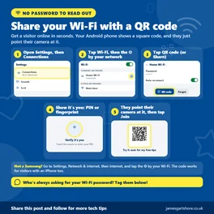
Partilhar Wi-Fi com um Código QR
Visitors asking for your Wi-Fi password? Here is how to share your Wi-Fi with a QR code on a Samsung or other Android phone.
Get Online Week Dia 3
É o terceiro dia da Get Online Week, e as dicas de hoje são sobre ferramentas gratuitas que o ajudam a manter-se seguro contra burlas.
Telemóvel Roubado
Queria partilhar o que fazer se o seu telemóvel for perdido ou roubado, e algumas coisas que vale a pena fazer agora, por precaução.

Reabrir uma Página Web Fechada
Closed an important web page by mistake? Here is how to get it back using History in Chrome or Samsung Internet. Free local help, Bridlington & Driffield.
Mudar de Operadora de Telemóvel
Check your contract and switch network by text for free: text INFO to 85075, then PAC to 65075 to keep your number. Free local help, Bridlington & Driffield.
Semana do Braille Dia 7
É o último dia da Semana Nacional do Braille, por isso queria terminar com algumas formas como a tecnologia está a tornar o braille mais fácil de aprender e utilizar.
Get Online Week Dia 2
É o segundo dia da Get Online Week e hoje eu queria partilhar alguns locais gratuitos onde pode aprender competências online ao seu próprio ritmo.
eBooks da biblioteca
Com o início dos dias mais escuros, queria partilhar algo fantástico que muita gente não sabe: pode pedir eBooks e audiolivros emprestados em...

Faça a sua bateria durar o dia todo
Simple ways to make your iPhone or Android battery last longer, from battery saving mode to stopping it charging to 100% every night.
Semana do Braille Dia 6
É o sexto dia da Semana Nacional do Braille, e as dicas de hoje são para computadores e portáteis.
Get Online Week
Esta semana é a Get Online Week, uma campanha nacional para ajudar mais pessoas a sentirem-se confiantes ao usar a internet. Estar online tornou-se parte da vida quotidiana,...
Burla de Clonagem de Voz
Eu queria partilhar um aviso sobre um esquema que se está a tornar mais comum: chamadas telefónicas que utilizam uma cópia da voz de um membro da família.
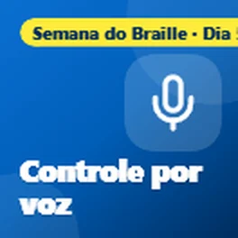
Semana do Braille Dia 5
É o quinto dia da Semana Nacional do Braille, e hoje eu queria partilhar como pode controlar o seu telemóvel apenas com a sua voz.
Dia 7 da Dispraxia
É o último dia da Semana de Consciencialização da Dispraxia, e eu queria terminar partilhando algum apoio para adultos e estudantes, porque a dispraxia não para...

Transição da Linha Fixa
Queria partilhar algo importante para qualquer pessoa que tenha um alarme pessoal, como um pingente ou um alarme de queda, que funcione através da linha telefónica da sua casa.
Semana do Braille Dia 4
É o quarto dia da Semana Nacional do Braille, e as dicas de hoje são sobre livros, rádio e TV que você pode desfrutar ouvindo.
Reduza as suas Faturas
Hoje é o Dia Internacional da Erradicação da Pobreza, por isso eu queria partilhar algumas ferramentas gratuitas que podem ajudar você a reduzir o custo da sua internet...
Dia da Dispraxia Dia 6
É o sexto dia da Semana de Consciencialização da Dispraxia, e hoje eu queria partilhar alguma tecnologia que ajuda a se locomover.
Semana do Braille Dia 3
É o terceiro dia da Semana Nacional do Braille, e hoje eu queria partilhar algumas maneiras gratuitas de fazer o seu telemóvel ou computador ler coisas em voz alta para si.
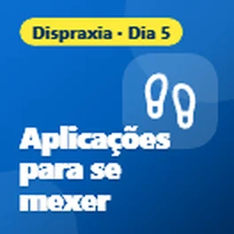
Dyspraxia Dia 5
É o quinto dia da Semana de Consciencialização da Dispraxia, e as dicas de hoje são todas sobre se mover.
Aplicações de Comida
Hoje é o Dia Mundial da Alimentação, por isso queria partilhar alguns aplicações gratuitas que podem ajudar a poupar dinheiro na comida e a evitar que a boa comida se desperdice.
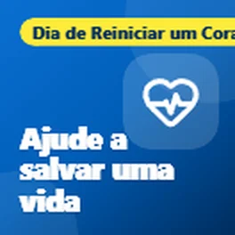
Reanimar um Coração
Hoje é o Dia de Reiniciar um Coração, por isso queria partilhar algumas aplicações e websites gratuitos que podem ajudar a aprender a fazer RCP e estar prontos para ajudar se alguém parar de bater o coração.
Semana do Braille Dia 2
É o segundo dia da Semana Nacional do Braille, e hoje também é o Dia da Segurança da Bengala Branca, por isso queria partilhar algumas aplicações gratuitas que ajudam pessoas com perda de visão...
Dyspraxia Dia 4
É o quarto dia da Semana de Consciencialização da Dispraxia, e hoje queria partilhar algumas ferramentas gratuitas que facilitam a leitura.
Mensagens de Texto de Falsos Encomendas
A text says a parcel could not be delivered and asks for a fee? Here is how to check safely using the courier's own app.
Dia da Dispraxia Dia 3
É o terceiro dia da Semana de Consciencialização da Dispraxia, e as dicas de hoje são para quem encontra a escrita difícil.
Recursos de Visão para Telemóvel
Esta semana é a Semana Nacional do Braille, por isso queria partilhar algumas funcionalidades gratuitas no seu telemóvel que podem fazer uma grande diferença se a sua visão não for o que...
Telemóvel ou Computador Portátil Antigo
Hoje é o Dia Internacional de Resíduos Eletrónicos, um bom lembrete sobre todos aqueles telemóveis, tablets e portáteis antigos que estão na gaveta. A maioria de nós tem...
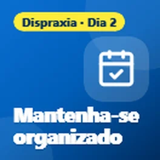
Dia da Dispraxia Dia 2
É o segundo dia da Semana de Consciencialização da Dispraxia, e hoje eu queria partilhar algumas ferramentas gratuitas que ajudam a manter a organização.

Ligar em Caso de Emergência
Hoje é o Dia Internacional da Redução do Risco de Desastres, por isso queria partilhar alguns recursos do seu telemóvel que podem realmente ajudar numa emergência....
Dia da Artrite
Hoje é o Dia Mundial da Artrite, por isso queria partilhar alguns recursos do seu telemóvel e portátil que podem facilitar muito a vida se tiver dores, rigidez ou...
Semana da Dispraxia
Esta semana é a Semana de Consciencialização da Dispraxia, por isso queria partilhar algumas formas como a tecnologia pode ajudar as crianças com dispraxia. A ideia é usar a tecnologia para ajudá-las...
Dia da Saúde Mental
O Dia Mundial da Saúde Mental foi a 10 de Outubro, por isso queria partilhar algumas coisas simples que o seu telemóvel já pode fazer para o ajudar a sentir-se um pouco mais calmo e mais...
Comunidades Online
Gardening, birdwatching, family history, football: there is almost certainly an online community for it. Here is where to look.
Encontre uma Aplicação Maliciosa
Seeing adverts on your home screen or over other apps? A bad app may be installed. Here is how to track it down using your battery settings.
Anúncios Pop-up Assustadores
Queria partilhar uma dica sobre aqueles pop-ups assustadores que por vezes aparecem nos telemóveis.
Atualização do Sat Nav
Standalone sat navs often do not update themselves the way phone map apps do. Here are the signs yours is out of date.
Selecionado!
Queria partilhar uma notícia. Fui recentemente pré-selecionado para os Prêmios Time2Volunteer 2026 pelo voluntariado que faço com um suporte técnico local...
Segurança no Computador
Queria partilhar algumas dicas sobre como manter o seu computador seguro, porque muitas pessoas acabam a pagar por antivírus que na verdade não precisam.
O que é um código QR?
Só queria partilhar uma dica rápida sobre códigos QR.

Temporizadores de Aquecimento
Com o tempo mais frio a chegar, agora é uma boa altura para verificar os seus temporizadores de aquecimento e água quente.
Verificação do Aquecimento
Com o inverno a chegar, agora é uma boa altura para testar o seu aquecimento, especialmente se não foi usado muito este ano.
Navegue por dicas por tópico
- Scams and staying safe (20)
- Fake news and online info (8)
- Health and wellbeing (23)
- Money (7)
- Getting online and staying connected (11)
- Notícias (1)
- Everyday tech (74)
O que as pessoas dizem
Muito obrigado, senhor
Sim, sem dúvida útil, obrigado. Vou partilhar com quem eu ache que as suas dicas possam ajudar 😃
Útil, obrigado
Receba novas dicas por e-mail
Um e-mail curto quando publico uma dica nova. Gratuito, e pode cancelar a qualquer momento.
Vai receber um e-mail para confirmar. Os e-mails são enviados por follow.it e cada um tem uma ligação para cancelar a subscrição.